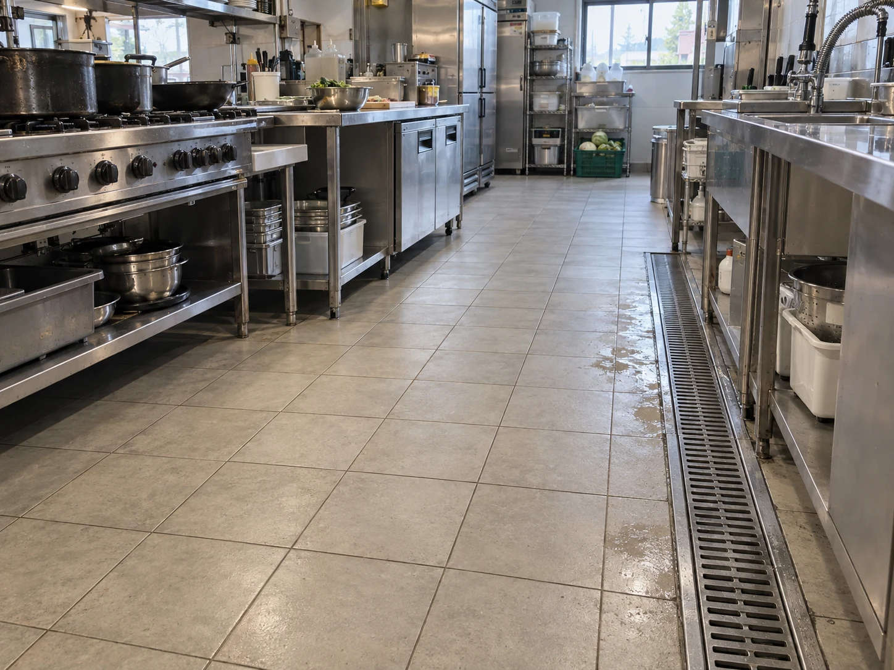
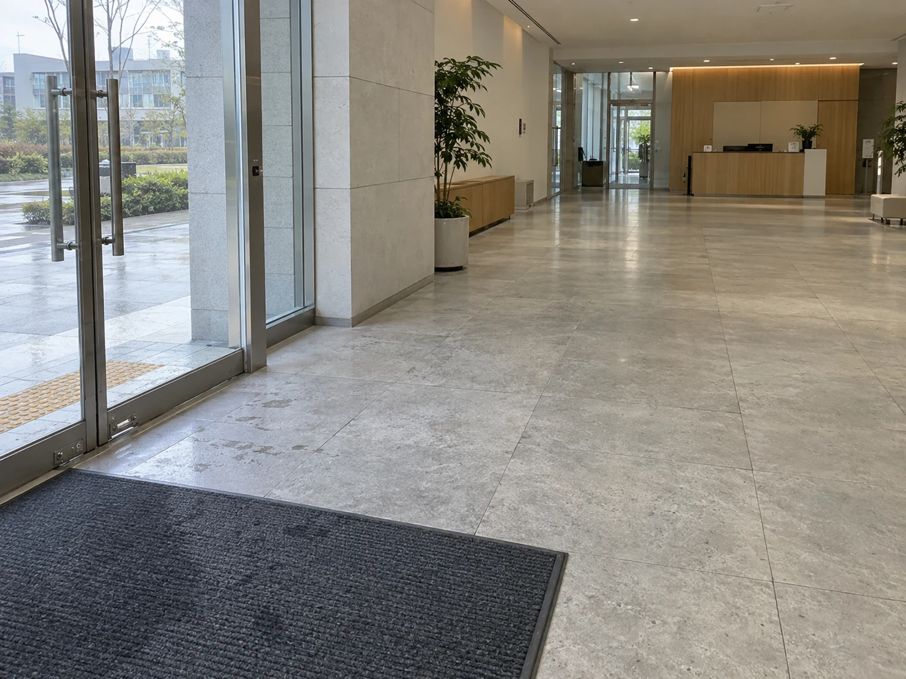
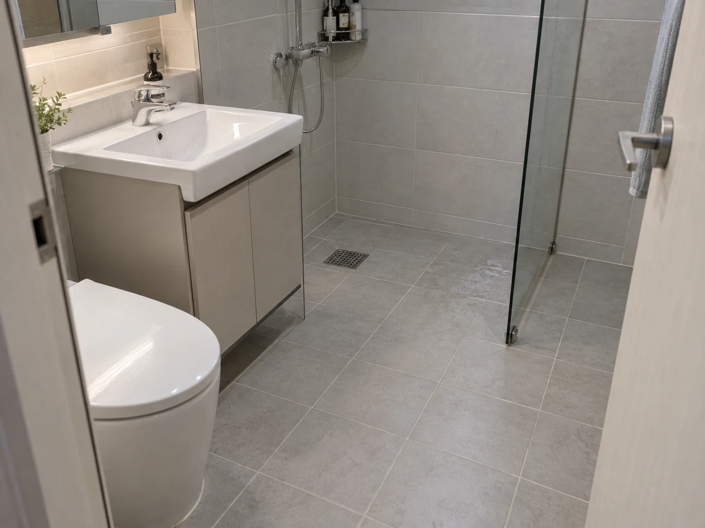
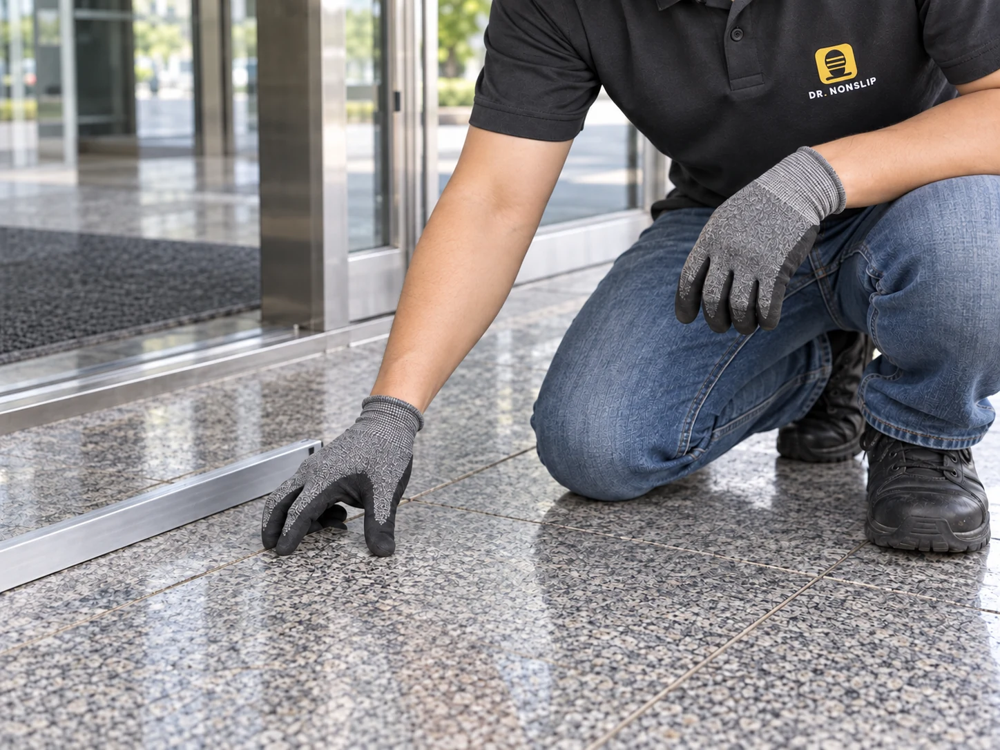
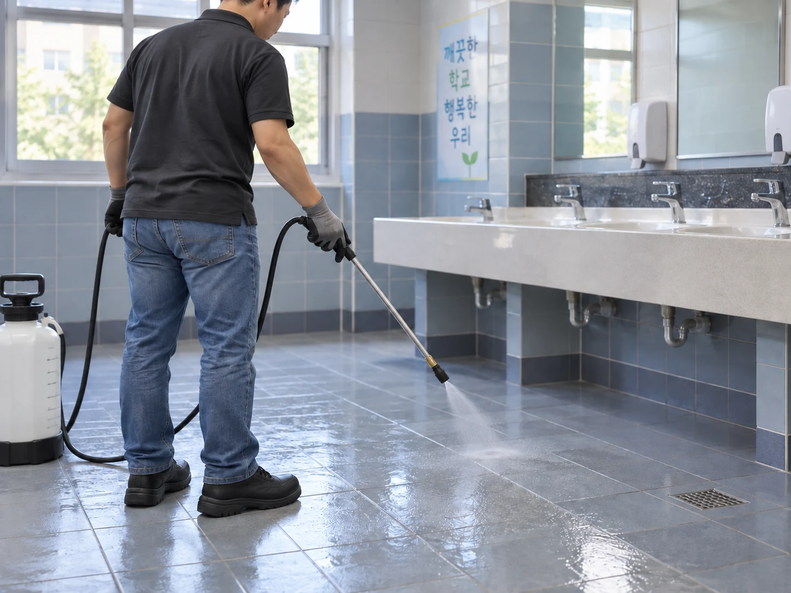
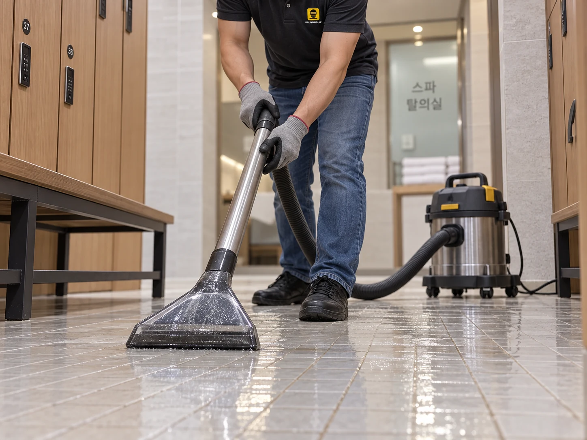
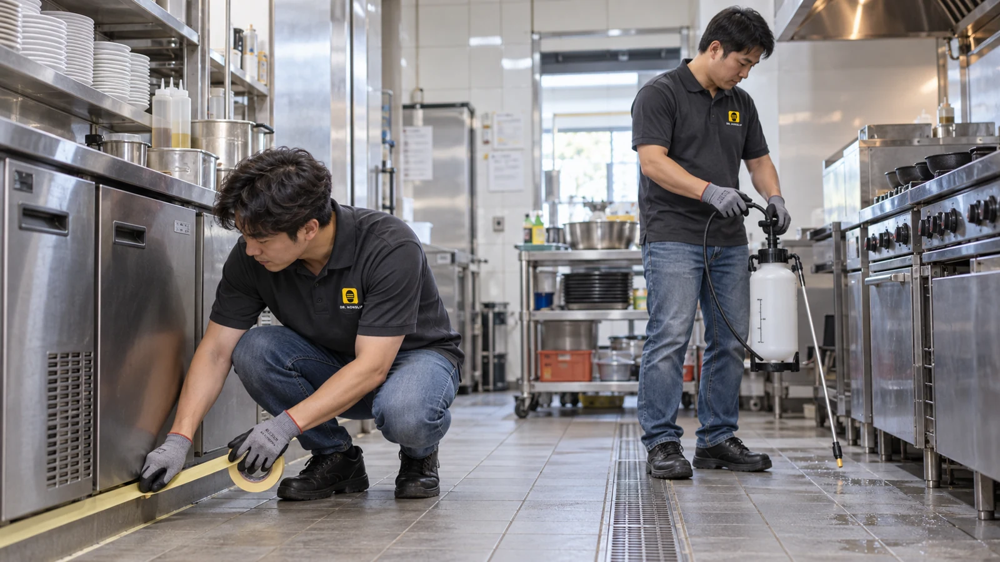
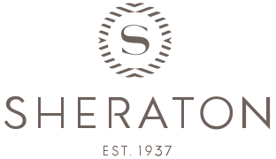

식당·주방조리·세척 구역부터
제품 시험으로 확인한 성능
같은 습윤 조건에서 확인한 변화.
타일 시료의 습윤 조건 정적마찰계수 시험 결과. 해당 시료·시험 조건 기준.
시험 조건과 결과 자세히 보기바닥이 젖었을 때 느껴지는 차이.
우리 바닥에서 무료 샘플로 확인하세요.
미끄러운 바닥, 바꿔야 할 이유
사람이 오가고 미끄럼이 걱정되는 바닥.
공간과 바닥 상태에 맞춰 시공합니다.



철거·교체 공정 없이
기존 바닥에 직접 시공합니다.
작업 시간은 현장과 운영 일정에 맞춰 조율합니다.
철거·교체 공정 없이
기존 바닥에 직접
영업 전후·휴무 시간 협의
분사·반응 관리·세척
바닥 상태와 이용 시점 확인

재질·오염·표면 마감 확인

균일한 도포와 반응 시간 관리

잔여액 세척·회수와 이용 안내
직접 운영 시공팀

현장 조건을 함께 확인하고,
시공부터 사후관리까지 직접 이어갑니다.
공법 적용 현장



 신성고등학교
신성고등학교
동일 공법의 제공 이력입니다. 닥터 논슬립의 직접 시공 실적과 구분하며, 현장명은 자료 작성 당시 기준입니다.
무료 방문 실측·샘플 시공
작은 구역에서 효과와 외관을 비교한 뒤,
전체 시공 여부를 결정할 수 있어요.
12개월 무상 A/S
관리 방법 안내와 시공 후 상담까지.
12개월 무상 A/S로 함께합니다.
작은 샘플 구역에서 미끄럼 변화와 외관을 함께 확인합니다.
시료와 조건을 명시한 처리 전후 시험자료를 확인하세요.
기름·비누·세제 잔여물이 쌓이지 않도록 재질에 맞춰 관리합니다.
사업장과 욕실의 관련 기준을 확인하세요.